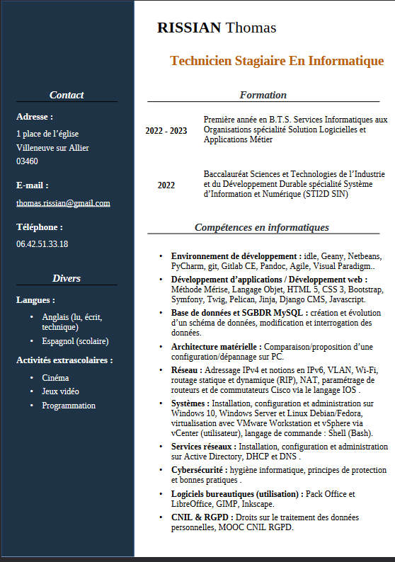
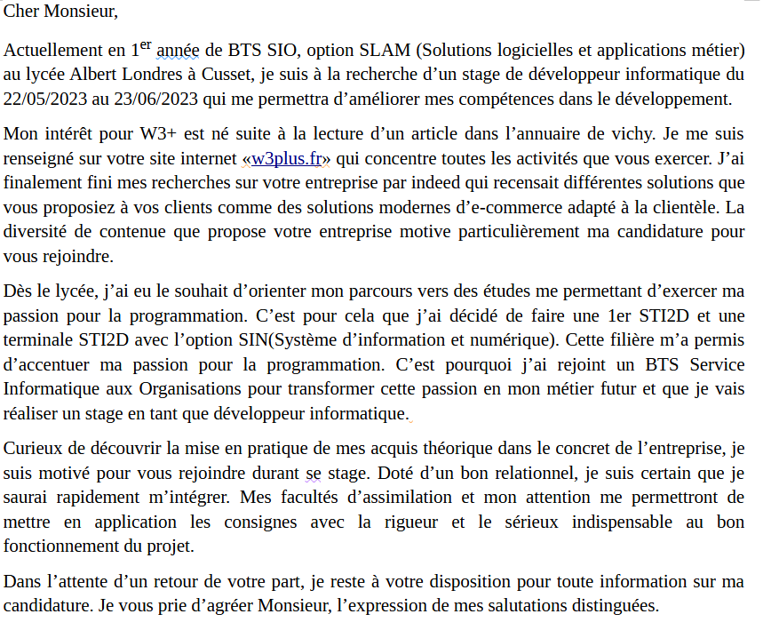

recherches métiers / rédaction CV / mail motivé
Contexte :
Cet AP a été réalisé à seul et nous avions comme objectifs :
- Analyser des vidéos ou documents de différents métier
- Réaliser une lettre de motivation et un CV
Je devais regarder des vidéos présentatrice ou des documents de différents métier en rapport avec le réseau pour pouvoir plus facilement m'orienter sur le choix d'étude plus tard. Par la suite j'ai dû réaliser une lettre de motivation et un CV selon une aide et un schéma de notre professeur afin de nous permettre d'en réaliser une conforme.


Environnement technologique :
- libre office(writter)
- boite mail(gmail)
compétence mobilisée :
- B1.6.3 Gérer son identité professionnelle
Cette réalisation m'a permis d’apprendre à réaliser un CV et une lettre de motivation mais m'a permis d’évoquer qui j’étais en format écrit ainsi que réunir mes compétences actuelles et futur pour les professionnels.
- B1.6.4 Développer son projet professionnel
Cette activité m’a permis de découvrir différents métiers en lien avec le réseau. Cela m’a permis d'en découvrir la diversité même si j'ai une plus grande attirance vers le milieu de la programmation. Réaliser un CV et une lettre de motivation qu'importe notre spécialité choisie est assez utile, car elle m’a permis de savoir comment en réaliser une et les différentes manière de pouvoir attirer l’œil de l'entreprise.